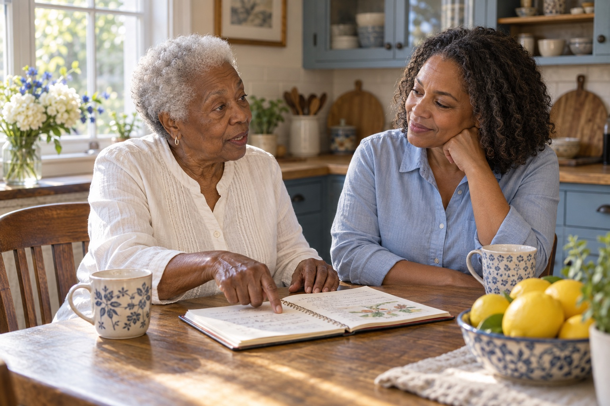

You still get
to be you.
You’ve made a lot of decisions in your life.
This conversation should include you, too.
Needing a hand with something doesn’t erase what you can do, what you like, or how you want your day to feel.
Let’s start there ↓
Some things should
still be yours.
Your favorite chair. Your morning routine. The name you like to be called. The things you’d rather do yourself.
01You can tell us what matters.
02You can ask questions.
03You can say when something doesn’t feel right.
Your daughter
is still your daughter.
Having someone else help doesn’t mean she stops being there.
It can make room for the kind of time you both miss. A cup of tea. A good story. A visit that isn’t only a list of things to do.
If you’re thinking about help at home or a new place to live, your wishes belong in that conversation.
What would you
like us to know?
Use this little page together. You can print it, write on it, and bring it to a conversation about care.
“My favorite part of the day is…”
“Please let me do this myself…”
“One thing I don’t like is…”
“I feel most comfortable when…”
You don’t need a plan.
Just a place to start.
Tell us a little about what’s changing. We can talk through what might help—and what feels right for Mom.
Let’s find your next stepA conversation. No need to decide today.